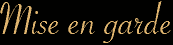

Nous attirons l'attention de nos clients sur le caractère non thérapeutique de nos modelages traditionnels.
Il s'agit uniquement de modelages relaxants et de bien-être ne pouvant se substituer à aucune action médicale ou paramédicale.
Les bienfaits des modelages de bien-être et de la réflexologie ne sont plus à démontrer.
Pour autant l'activation musculaire, vasculaire et veineuse peut s'avérer néfaste en cas de pathologie même bénigne !
Si vous avez des doutes n'hésitez pas à nous en faire part.
Merci de nous prévenir en cas de grossesse.
Vous trouverez ci-dessous une liste, non exhaustive, des contre-indications aux techniques de modelage relaxant et de réflexologie que nous dispensons :
• S'abstenir systématiquement de modelages relaxants dans les cas suivants :
Pendant toute maladie même bénigne, surtout si elle est contagieuse, et aussi en cas fièvre même peu élevée.
En cas d'éruption cutanée, dermatose, ecchymoses, brûlures importantes, cicatrisation de plaies importantes post opératoire.
Pour les petits bobos, petites plaies, ampoules, coupures, petites brûlures, le modelage risque de faciliter la propagation de l'infection sans compter le risque de contagion.
Jamais de modelage en cas de lésions traumatiques : entorse, fracture, déchirure musculaire...
Aucun modelage en cas de phlébite suspectée ou avérée. Pour les troubles circulatoires (varices, thrombose...) cela dépend de la gravité de votre état, demander conseil à votre médecin.
Pour les toutes maladies chroniques : jamais pendant "une poussée". En période de rémission demander conseil à votre médecin.
Toutes les atteintes sévères au squelette interdisent les modelages relaxants.
• Éviter les modelages relaxants dans les cas suivants :
Les modelages dans les 3 mois qui suivent une intervention chirurgicale.
En cas de douleurs non identifiées par un médecin. Ce dernier vous indiquera alors si vous pouvez sans risque recevoir un modelage relaxant.
Pendant la phase aiguë et la période de convalescence d'une pathologie de courte ou de longue durée, quelque soit sa gravité, il faut s'abstenir de modelage.
Nous n'effectuons pas de modelage pendant les 3 premiers mois de grossesse.
En cas de doute n'hésitez pas à consulter un professionnel de santé.